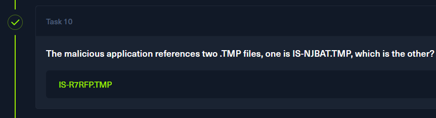

Trojan
John Grunewald was deleting some old accounting documents when he accidentally deleted an important document he had been working on. He panicked and downloaded software to recover the document, but after installing it, his PC started behaving strangely. Feeling even more demoralised and depressed, he alerted the IT department, who immediately locked down the workstation and recovered some forensic evidence. Now it is up to you to analyze the evidence to understand what happened on John's workstation.
Task 1
What is the build version of the operating system?
From the challenge archive, I got the following files:
Disk_artifacts.ad1 - Disk image file
memory.vmem and .vmsm - Memory files related to the box and VMware
network.pcapng - A PCAP file
My first step was to try running volatility3 against the 2 memory files. I thought that the banners module would display the OS name, alongside its build number/version.
There was no banner information found within the memory dump. I decided to turn my attention towards the victim's filesystem and the disk image.
The next thing I wanted to check were the registry hives, the SOFTWARE hive in particular. These were not present in the disk image, though, so that was a dead end.
Another volatility3 module, which shows OS-related information, is windows.info, which shows OS & kernel details of the provided memory dump.
python volatility3/vol.py -f memory\ capture/memory.vmem windows.info
The values I'm looking for are located under the Major/Minor(build number) entry. The minor number will be my answer to question 1.
Task 2
What is the computer hostname?
This information can be found in the registry hives as well. But since I don't have them in this scenario, the provided PCAP file should be more than enough.
I know that the machine had made at least one connection since some software was downloaded.
In the PCAP, I can see a few packets with certain protocols aimed towards a repeating hostname. The NBNS packets repeat for a while after, and no other hostnames are mentioned.
Task 3
What is the name of the downloaded ZIP file?
I can see all objects loaded/downloaded within the events of this PCAP by going to File -> Export Files.
In the opened window, I will filter for the .zip string. This will filter out every object that is not a ZIP archive.
An archive named Data_Recovery.zip was downloaded from praetorial-gears.000webhostapp.com. The archive's name will be my answer to question 3.
Task 4
What is the domain of the website (including the third-level domain) from which the file was downloaded?
The answer to this question was provided while solving task 3. It is praetorial-gears.000webhostapp.com

Task 5
The user then executed the suspicious application found in the ZIP archive. What is the process PID?
Files included in the PCAP can be extracted onto the local machine. From the same window, I will choose Save to save the archive locally.
Now that I know how the file is named, I can search for its process within the memdump via the pslist module of Volatility.
I can see a Recovery_Setup process with a PID of 484. This ID will be my answer to question 5.
Task 6
What is the full path of the suspicious process?
Pslist does not show me the executable's full path. There is a similar module that actually does show these paths, and it is pstree
python volatility3/vol.py -f memory\ capture/memory.vmem windows.pstree.PsTree | grep Recovery -C 10
I can see that the process originates from C:\Users\John\Downloads\Data_Recovery\Recovery_Setup.exe
Task 7
What is the SHA-256 hash of the suspicious executable?
The SHA256 hash can be obtained in two ways. First, I can upload the .exe to Virustotal.
Aside from that, I can also use sha256sum on Linux to get the hash quickly.
In both cases. The hash is the same.
Task 8
When was the malicious program first executed?
Back on my Windows VM, I extracted the entire C:\Windows directory with FTK Imager. This will allow me to get the prefetch files, which contain valuable information about the executable.
These files are created to optimize application loading times by caching data needed for frequently used programs. By parsing these files, I can get details like the last time that .exe file was run, and the number of times it was executed.
I will use Eric Zimmerman's PECmd.exe to parse the prefetch file of the malicious .exe.
.\PECmd\PECmd.exe -f C:\Users\malware\Desktop\challs\Trojan\Windows\Prefetch\RECOVERY_SETUP.EXE-A808CDAB.pf
The file was executed 2 times, and the date of the first time the user executed it is 2023-05-30 02:06:29
Task 9
How many times in total has the malicious application been executed?
This question has been answered while solving the previous task, and the answer is 2.
Task 10
The malicious application references two .TMP files, one is IS-NJBAT.TMP, which is the other?
In the list of files referenced, there are 2 .TMP files.
The other .TMP file is IS-R7RFP.TMP

Task 11
How many of the URLs contacted by the malicious application were detected as malicious by VirusTotal?
Back on VirusTotal, I went to the behavior tab and looked at the HTTP Requests section.
There are 4 URLs consisting of 45.12.253.X, most of which are leading to suspicious PHP files. My answer to question 11 will be 4.
Task 12
The malicious application downloaded a binary file from one of the C2 URLs, what is the name of the file?
Since I have the URL, I'll go back to Wireshark and the PCAP file.
I can see two application/octet-stream content types, and both are related to this puk.php file.
I'll export this file onto my host, and I'll answer the question with puk.php
Task 13
Can you find any indication of the actual name and version of the program that the malware is pretending to be?
In the community tab on Virustotal, there are quite a few reports about this malware.
https://www.joesandbox.com/analysis/1706232/0/html
In the file activities section of the JoeSandbox report, there is an interesting entry.
One of the TMP files, is-AOCSC.tmp, contains an ASCII string related to FinalRecovery
This is a legitimate data recovery software, and this particular .TMP file is most likely masquerading as it.
FinalRecovery v3.0.7.0325 will be my answer to question 13.
Solved!